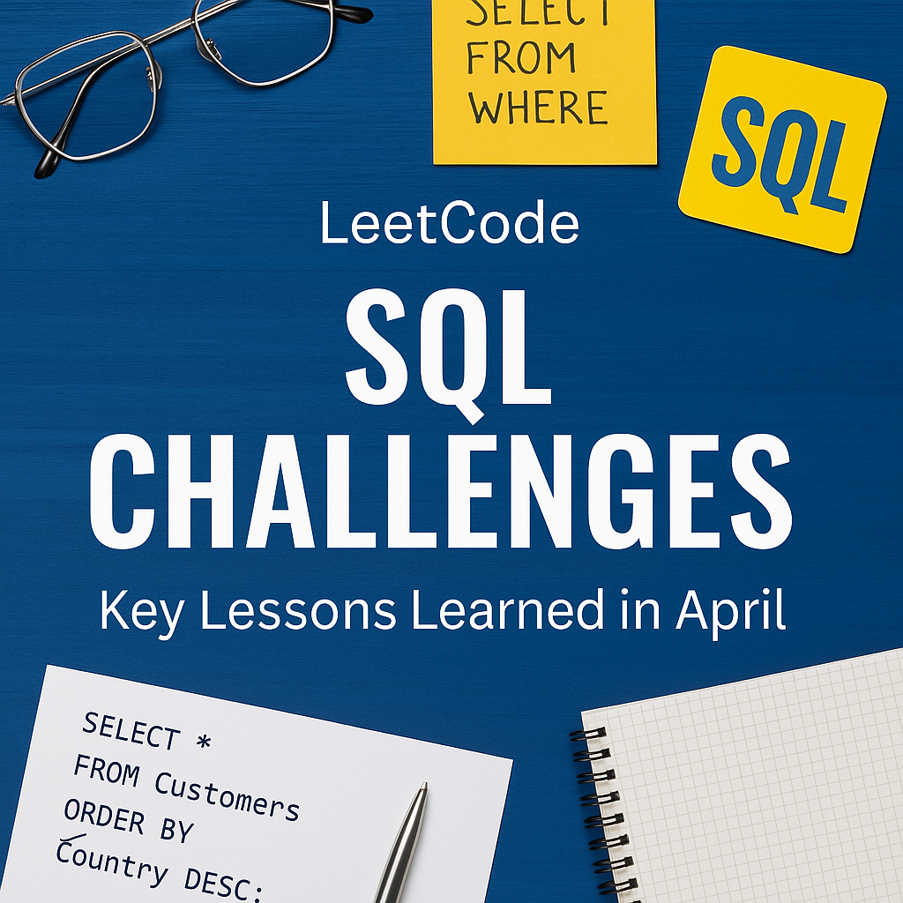

April 2025 SQL Learning Reflection

Throughout April, I focused on solving medium to hard-level SQL problems on LeetCode. I wanted to sharpen my skills in handling more advanced SQL topics like analytical functions, CTEs, and multi-table joins, moving beyond just basic SELECT queries.
I worked on various problems related to business scenarios like transaction summaries, user behavior tracking, project allocations, and customer analytics.
Key Concepts I Focused On
- Window Functions: Practiced using LAG(), DENSE_RANK(), and ROW_NUMBER() to solve problems that required comparisons across rows without collapsing data using GROUP BY.
- Common Table Expressions (CTEs): Used CTEs extensively to break down multi-step queries into manageable chunks. I realized how CTEs make complex queries much more readable.
- Joins and Self-Joins: Mastered the use of LEFT JOIN, INNER JOIN, and self-joins to combine related information from multiple tables, especially for user-friend relationships and transaction linking problems.
- Aggregation and Conditional Sums: Got better at writing queries that calculate conditional totals (e.g., approved vs. chargeback transactions) and grouping by months or countries.

Challenges I Faced
- Realized that COALESCE() and careful join conditions are critical when dealing with incomplete data or missing relationships
- Building queries with nested CTEs and multiple joins sometimes got confusing. Breaking problems into smaller parts helped me structure the queries more systematically.
My Progress so far
- I feel more confident writing complex queries that use both aggregation and window functions.
- I started writing cleaner queries with meaningful aliases and clear formatting.